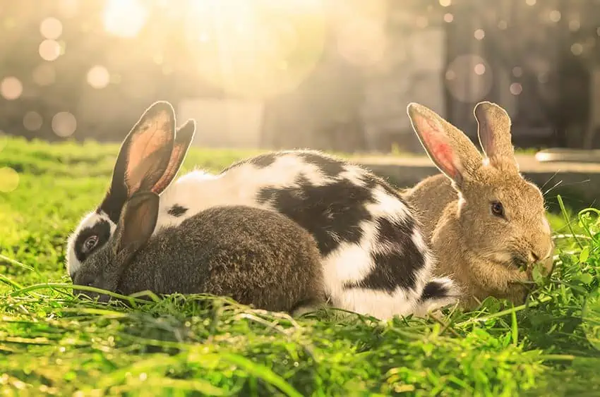

Rabbits are masters of subtle communication. At PurrPets, we want you to know the difference between a happy "Binky" and a grumpy "Thump"!

| Action | What It Means | Your Move |
|---|---|---|
| The Binky | A jumping twist in the air. | Celebrate! Your rabbit is ecstatic. |
| The Thump | Stomping a back leg loudly. | Warning! They sense danger or are very annoyed. |
| The Flop | Suddenly falling onto their side. | Do not disturb; they are 100% comfortable. |
| Tooth Purring | Soft rhythmic clicking of teeth. | Keep petting! This is the rabbit version of a cat's purr. |
| Chinnying | Rubbing their chin on objects. | "This is mine now." (Scent marking). |
| The Nudge | Poking you with their nose. | "Pet me!" or "Move, you're in my way." |
Rabbits hate being picked up! In the wild, the only thing that picks up a rabbit is a hawk or a fox. At PurrPets, we recommend Floor-Level Bonding. Sit on the floor and let them come to you.
If a rabbit puts their ears back and "growls" (a low grunting sound), back off! Even a 2-pound Netherland Dwarf can be surprisingly feisty when they want their personal space respected. Respect the boundaries, and they will eventually reward you with "Bunny Kisses" (grooming your hand).